Robust Control and Loop Shaping
Robust control is not one controller like PID but rather a desing method that allows us to tune PID gains or other controllers so the actual controller is robust.
What is Robustness?
A robust system is one capable of meeting requirements (stability or performance measures) even in the presence of model uncertainty and/or disturbance uncertainty.
Motivation and Background
A paper by John Doyle proved that there is no guarantee on robustness of LQG scheme. This discovery pushed the industry towards robust control. We need to delve into Laplace domain and determine Robustness of a system. Laplace Transform domain gives us insights into the performance, sensitivity, and robustness characteristics.
A Quick Note about this Section
All the material on SISO systems below only pertains to variations at the input.
Why use Disk Margin?
-
Even though increasing delay or increasing gain individually (reducing GM and PM respectively) may not cause the system to be unstable, adding a mix of the two can unstabilize the system. The disk margin therefore needs to be considered. To anaylze the effect of adding phase and gain, use Nyquist Plot.
-
Disk margin can be used on MIMO.
Disk Margin
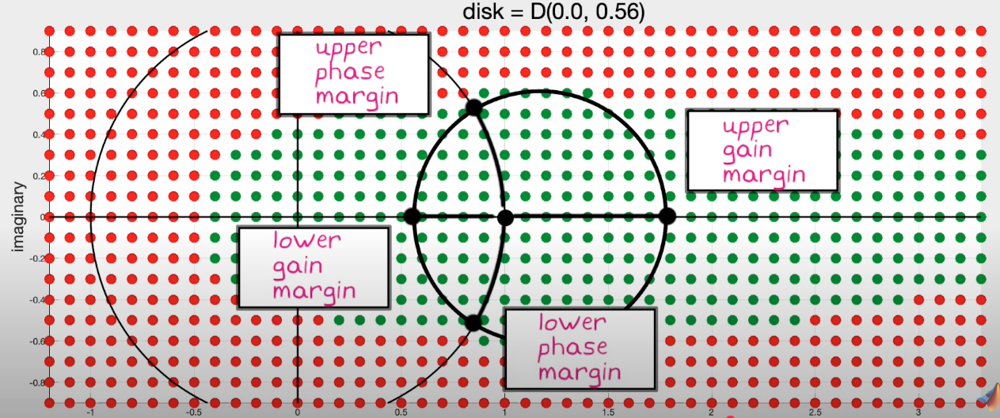
The disk reads “Given \(e=0.0\), the maximum disk margin is 0.56”
Parameters of the disk
The disk must be fit entirely in the stable region and includes the nominal point \(f =1 + 0i\)
- Skew factor \(e\). how far off the center of the disk is to the nominal point.
- \(\alpha\) measures the size of the disk. It represents the size of the disk given a certain \(e\) such that the disk is entirely in the stable region.
Disk Placement
You can choose where the disk is:
-
If you think real system gain is bigger than model gain, use a bigger \(e\)
- If unsure, choose \(e = 0.0\)
-
Disk margin may not be conservative even if it may only covers a small area of stability zone.

- in this case, while gain margin is bigger, at those bigger gain values, not much wiggle room for phase -> not optimal
-
May need to check all three margins to ensure accurate representation of the stability.
- Some systems are robust to pure phase or gain variations but not a mix of the two
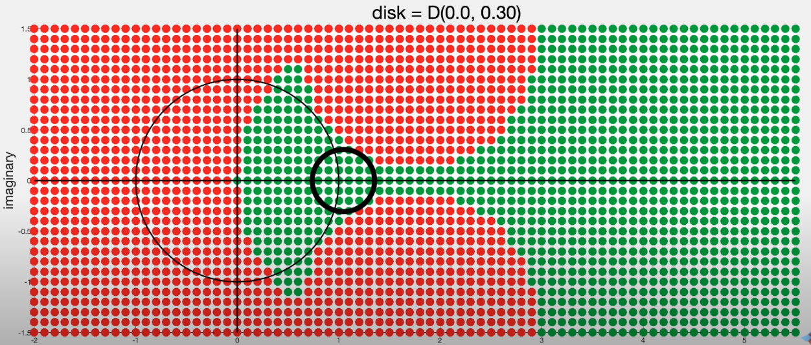
Disk Margin for MIMO
Multi-loop Input Disk Margin (Input TO PLANT Only)
The Multi-loop Input disk margin is the largest disk such that any \(n\) independent variations within the disk were applied to the \(n\) plant inputs, the loop would be stable.
Multi-loop Output Disk Margin (Output Only)
The Multi-loop Output disk margin is the
Multi-loop Input/Output Disk Margin
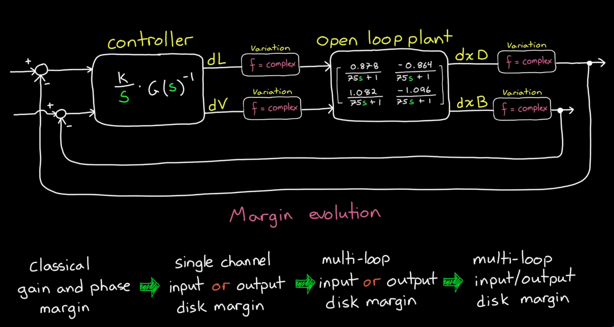
MIMO Disk Margin Example
A simple MIMO controller can be designed by taking the inverse of the plant transfer functions matrix \(G(s)\). We can then use loop shaping and mulitply the controller with \(\frac{1}{s}\). In this case the system behaves like an integrator.
Input:
-
Loop-at-a-time input disk margins (varying input one at a time):
- Infinite Gain margins and large phase margins
-
MLIDM is very similar to Loop-at-a-time:
- Infinite Gain margins and large phase margins
- This is because the channels are decoupled by the inverse!
Output: Since we mulitplied G(s) by its inverse, this practically decoupled the channels.
- Loop-at-a-time output disk margin (varying output one at a time)
- MLODM also yields
MIMO (Multi-loop concurrent input/output disk margins):
- Very little Gain Margin and Phase Margin
Reasoning: Inverting the plant is not desirable since this is assuming perfectly cancellation between the pole and zero. If there’s any perturbation, the design falls apart.
System Parameter Uncertainty
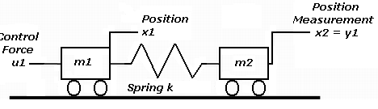
For a dual-cart system, there may be uncertainties in model parameters such as spring constant K and mass m.
Undesirable: Monte Carlo
Generate random models within a threashold of the model parameters and check stability. Monte Carlo may claim false positives.
Matlab robstab
This approach analytically solves for the cases where the system becomes unstable
Three Equivalent Representations of Linear Systems
- State space representation \(\dot{x}=Ax+Bu \\ y=Cx\)
- Transfer functions \(G(s)=C(sI-A)^{-1}B\)
- Impulse response time domain \(y(t)=\int_{0}^{t}h(t-\tau)u(\tau)d\tau\) This is a convolution between impulse response and control input
Note there are different usages for each of the three representations.
- If physics can be represented, State space representation can be very useful.
- Transfer functions can be useful for investigating robustness and performance
Deriving Sensitivity and Complementary Sensitivity with Loop Transfer Function
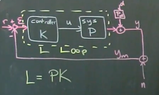
where d is disturbance, n is measurement noise, r is reference setpoint, P is the system transfer function, and K is the controller transfer function.
\[L = PK\]Note K is applied first to the error before P.
\[I*y = P_{d}*d+ PK(r-y-n), \text{where} (r-y-n) = \epsilon\] \[(I+Pk)*y = PKr + P_{d}*d - PKn\] \[y = (I+P*K)^{-1} * PKr + (I+PK)^{-1}P_{d}d - (I+PK)^{-1}PKn\]\(\text{Therefore, } (I+PK)^{-1}PK \text{ is called complimentary sensitivity matrix, and } (I+(Pk))^{-1} \text{ is the sensitivity matrix}\)
- first term of y tracks trajectory
- second term of y rejects disturbance
- third term of y attenuates noise
Sensitivity and Complementary Sensitivity Functions
In a standard negative feedback loop:
- Plant: \(G(s)\)
- Controller: \(K(s)\)
- Loop transfer function: \(L(s) = K(s)G(s)\)
1. Sensitivity Function \(S(s)\)
\[S(s) = \frac{1}{1 + L(s)} = \frac{1}{1 + K(s)G(s)}\]- Measures the system’s sensitivity to disturbances and model uncertainty.
- A smaller \(|S(j\omega)|\text{ means better disturbance rejection at frequency }\omega\).
2. Complementary Sensitivity Function \(T(s)\)
\[T(s) = \frac{L(s)}{1 + L(s)} = \frac{K(s)G(s)}{1 + K(s)G(s)}\]- Measures the system’s response to the reference input and its sensitivity to measurement noise.
- A larger \(|T(j\omega)|\) at low frequencies means better reference tracking.
3. Transfer Functions Bode Plots
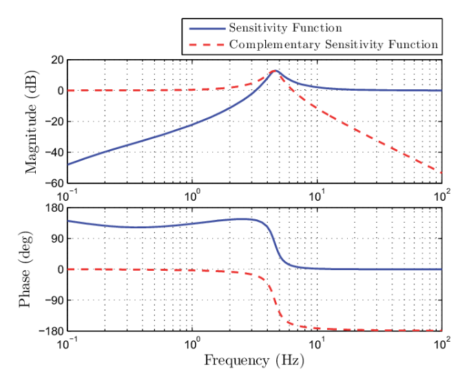
Error Term \(\mathcal{E} = r - y_{m} = S*r - S*P_{d}*d + T*n\) where
- \(n\) is measurement noise
- \(P_{d}\) is disturbance Transfer Function and d is disturbance. \((\text{L loop output} + P_{d}*d=y)\)
- \(r\) is reference setpoint
- \(S\) is Sensitivity and \(T\) is Complementary Sensitivity
Why does the Bode plot look like that?
- S needs to be small in low frequencies to minimize error \(\mathcal{E}\) (first term in \(\mathcal{E}\) formula), since a realistic \(r\) would be low in frequency for system to follow.
- Reference Tracking and disturbance rejection are typically low frequency phenomemon.
- T needs to be small in maganitude for high frequencies, since noise \(n\) is generally high in frequency.
- \(\omega_ {c}\) denotes the crossover frequency, being the frequency at which Sensitivity starts to increase and Complementary Sensitivity begins to decrease.
- \(\omega_ {c}\) can be tuned to be where the user thinks noise begin to overwhelm the system.
- Peaks or bumps in Sensitivty transfer function is undesirable and needs to be attenuated
4. Relationship
\[S(s) + T(s) = 1\]MIMO Case (Matrix Form)
Let:
- \(G(s) \in \mathbb{R}^{p \times m}\) be the plant
- \(K(s) \in \mathbb{R}^{m \times p}\) be the controller
- \[L(s) = G(s)K(s)\]
Then:
\(S(s) = (I + L(s))^{-1}\) \(T(s) = L(s)(I + L(s))^{-1}\)
These satisfy:
\[S(s) + T(s) = I\]Summary
| Function | Formula | Meaning |
|---|---|---|
| \(S(s)\) | \(\frac{1}{1 + K(s)G(s)}\) or \((I + G(s)K(s))^{-1}\) | Sensitivity to disturbances |
| \(T(s)\) | \(\frac{K(s)G(s)}{1 + K(s)G(s)}\) or \(G(s)K(s)(I + G(s)K(s))^{-1}\) | Response to reference / noise sensitivity |
| Relation | \(S + T = 1\) or \(S + T = I\) | Always holds |
Loop Shaping
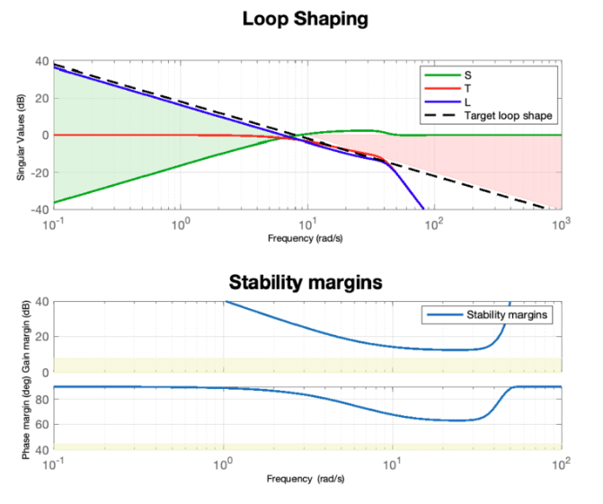
- The Bode plot of the Loop Transfer Function looks like an Integrator
- high gain at low frequencies for good reference tracking and noise rejection (S needs to be small so L needs to be big )
- low gain at high frequencies to attenuate noise
- bode plot can be shifted left or right by multiplying transfer function by \(\omega_{s}/s\)
- Loop shaping is a collection of several different design methods based on the idea of choosing a compensator that gives a loop transfer function with a desired shape.
- One possibility is to start with the loop transfer function of the process and modify it by changing the gain and adding poles and zeros to the controller until the desired shape is obtained.
If you have a model for the system and a desired Loop Transfer Function, MATLAB can tune K, the controller transfer function to robustify control system. No LQG needed.
Non-Robustness for Loop Shaping
The peaks in Sensitivity graph is undesirable since the larger the peak, the closer the controller system gets to instability (-1 point on the Nyquist plot).

where \(max|s|=1/m\)
Therefore a larger peak in sensitivity S correspond to a closer distance to instability.
The actual system dynamics can rotate the curve (Phase) or shift it left to make the system unstable.
Cone of Uncertainty

This takes into account of model uncertainty in P.
Causes of Non-Robustness and Instability
- model uncertainty. The real system gain is smaller or bigger than the model
- Time delays.
- Right Half Plane (RHP) zeros of P (the system transfer function)
Important Note: Time delay and RHP zeros of P give a fundamental limit on how small \(max(|S|)\) can be! To satisfy these hard rules set by Time delay and RHP zeros, one needs to shift \(\omega_{c}\) (the crossover frequency) to the left. This means the systems can only track low frequency references and reject lower frequency disturbances.
Recall: a RHP zero would cause the system to go in the wrong direction before converging. (This behavior is similar to a time delay.)
A RHP zero introduces Non-minimum Phase and would cause the system to go in the wrong direction before converging.
Example: 1. Aircraft gaining altitude. 2. parallel park.
Gang of Four (No Feedforward F = 1) and Gang of Six (Feedforward)
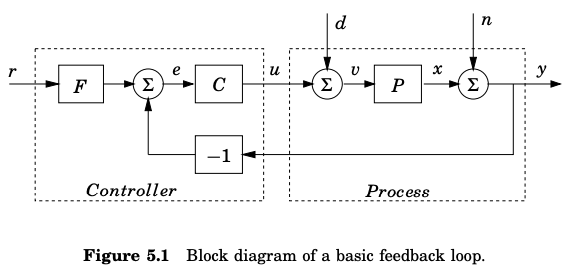
Setup
- Varaibles:
- control input: u
- system state: x
- system output: y
Gang of Four (No Feedforward Control F = 1)
\[S = \frac{1}{1 + PC} \quad \text{sensitivity function}\] \[T = \frac{PC}{1 + PC} \quad \text{complementary sensitivity function}\] \[PS = \frac{P}{1 + PC} \quad \text{ disturbance sensitivity function}\] \[CS = \frac{C}{1 + PC} \quad \text{noise sensitivity function}\]Gang of Six (with Feedforward Control)
Easy to Derive:
\[X = \frac{P}{1 + PC} D - \frac{PC}{1 + PC} N + \frac{PCF}{1 + PC} R\] \[Y = \frac{P}{1 + PC} D + \frac{1}{1 + PC} N + \frac{PCF}{1 + PC} R\] \[U = -\frac{PC}{1 + PC} D - \frac{C}{1 + PC} N + \frac{CF}{1 + PC} R\] \[\frac{PCF}{1 + PC}, \quad\] \[\frac{PC}{1 + PC}, \quad\] \[\frac{P}{1 + PC}, \quad\] \[\frac{CF}{1 + PC}, \quad\] \[\frac{C}{1 + PC}, \quad\] \[\frac{1}{1 + PC}\]\(H_\infty\)
\(H_\infty\) Synthesis
\(H_\infty\) methods are used to synthesize controllers to achieve stabilization with guaranteed performance. To use such methods, one needs to express the control problem as a mathematical optimization problem and then finds the controller that solves this optimization.
The resulting controller is only optimal with respect to the prescribed cost function and does not necessarily represent the best controller in terms of the usual performance measures used to evaluate controllers such as settling time, energy expended, etc. Also, non-linear constraints such as saturation are generally not well-handled.
\(H_\infty\) techniques can be used to minimize the closed loop impact of a perturbation. May not be robust for variations in system model.
Advantages
Advantages:
- \(H_\infty\) is readily applicable to problems with multivariate systems with cross-coupling between channels.
Disadvantages
- Complex math
- A good model is required
\(H_\infty\) example modeling car tire over a bump
System Setup
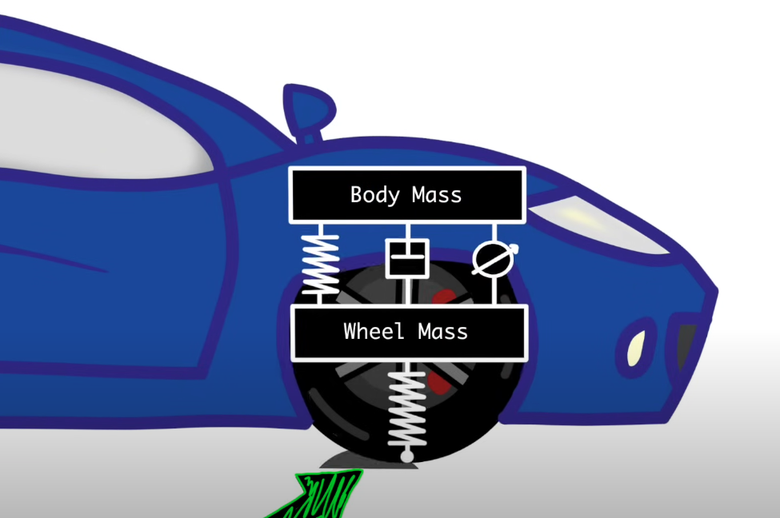 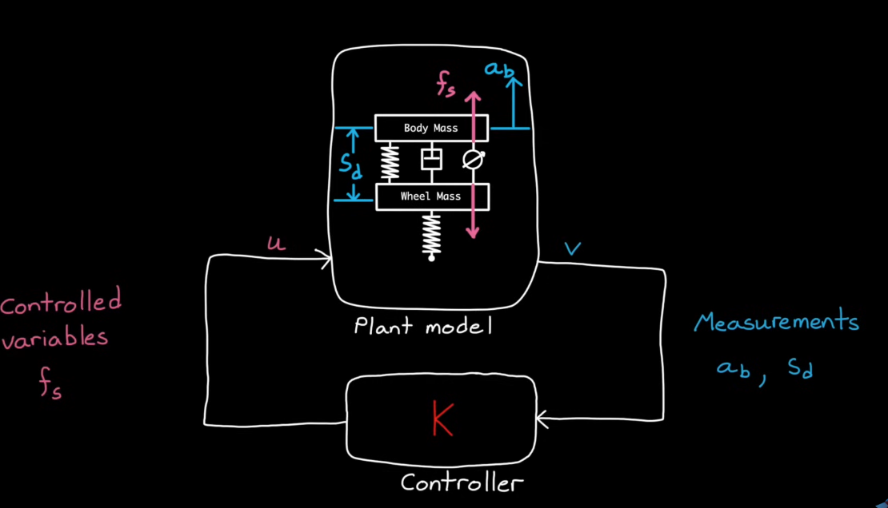
\(H_\infty\) Setup
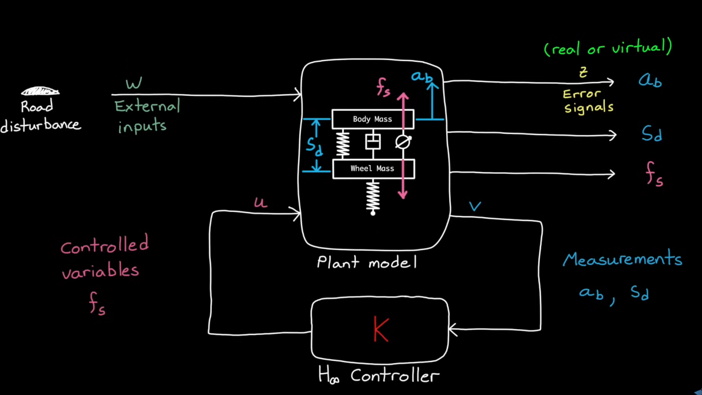
A controller that takes two measured external signals, \(S_d\) suspension travel and \(a_d\) body acceleration.
\(\mu\) Synthesis
\(\mu\) synthesis is an extension of \(H_\infty\). It solves the same problem but try to minimize the worst case gain over the entire uncertainty space. It aims to reduce the impact of model uncertainty in \(H_\infty\).
D-K Iteration.
- Run \(H_\infty\) to find a nomial controller
- Checks robustness
- Scales the problem based on the uncertainty in the system and runs another \(H_\infty\)